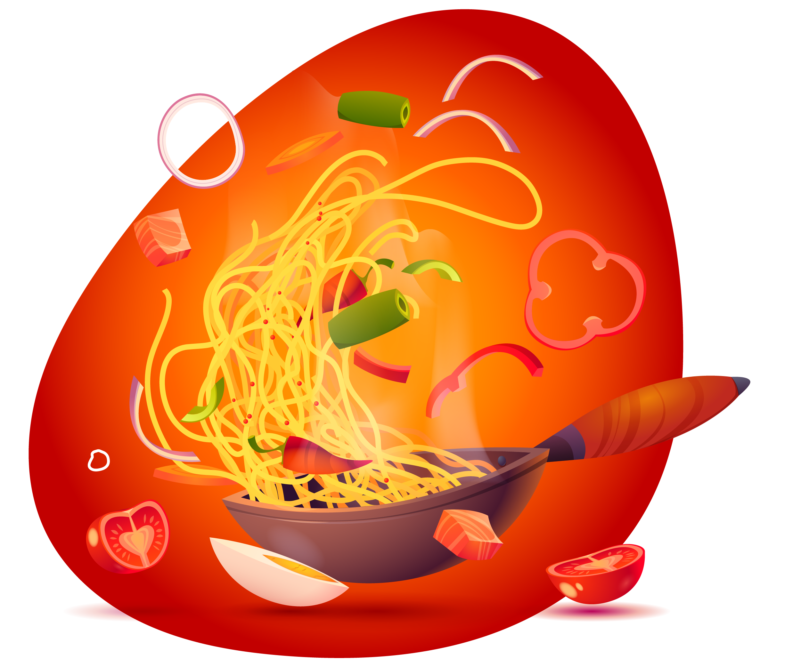

Chowmein Recipe
Home
Contact us
Shop



Ingredients:
- Oyster sauce 1 tbs
- Soy sauce 2 tb
- Sesame oil 1 tsp
- Cheeni (Sugar) 1 tbs (optional)
- Kali mirch powder (Black pepper powder) 1 tsp
- Safed mirch powder (White pepper powder) ½ tsp
- Corn flour 2 tbs
- Chicken boneless cut in strips 250 gms
- Chow mein sauce 1 tbs
- Oil 2 tbs
- Lehsan (Garlic) finely chopped 1 tbs
- Gajar (Carrot) julienne ½ Cup
- Bund gobhi (Cabbage) shredded 2 Cups
- Shimla mirch (Capsicum) julienne ½ Cup
- Hara pyaz ka safed hissa (Green onion white part) julienne ¼ Cup
- Sirka (Vinegar) 2 tbs
- Chow mein or Egg noodles (Boiled) 1 & ½ Cups
- Yakhni (Chicken stock) ¼ Cup
- Namak (Salt) ½ tsp or to taste
- Hara pyaz (Green onion) julienne ½ Cup
- Kali mirch (Black pepper) crushed ½ tsp